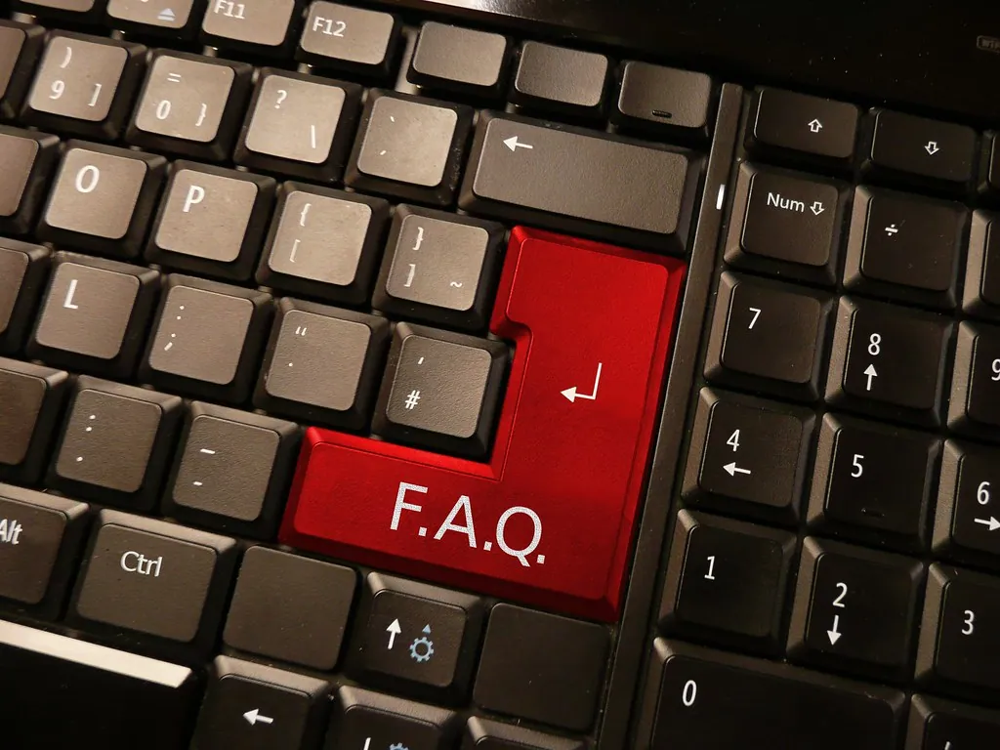

Setting Up Email
Email is just a letter that travels through the computer. In this lesson you will sign in, read and send messages, add a photo, and understand the spam folder — using Gmail and Outlook as our examples.

Kindly Keystrokes is an independent educational website and is not affiliated with, endorsed by, or sponsored by any company mentioned.
What email really is
Email is simply a letter that travels through the computer instead of the post. You write it, you address it to someone's email address, and it arrives in seconds. There is no stamp, no envelope, and no cost per message. An email address always has one @ sign in the middle, like yourname@gmail.com. The part before the @ is the person; the part after it is the service they use.
The two services we will use as examples are Gmail (from Google) and Outlook (from Microsoft). Both are free, both are reliable, and the ideas are the same whichever you choose.
Two ways to reach your email
You can open your email in two places, and it is the same mailbox either way:
- In a web browser — you go to the service's website and sign in. This works on any computer.
- In the Mail app — a program built into Windows that gathers your email into one window.
We will set up both, starting with the browser, because it is the clearest way to see how email works.
Signing in through a browser
What you'll need
- Your email address
- Your password
- A web browser such as Microsoft Edge (the blue-green wave icon on the taskbar)
- Click the browser icon on the taskbar to open it.
- Click once in the long bar at the very top of the window — this is the address bar.
- Type gmail.com (for Gmail) or outlook.com (for Outlook) and press the Enter key.
- On the page that appears, type your email address, click Next, then type your password.
- Click Sign in. Your inbox opens, showing your messages newest first.
Tip: Type the website address yourself rather than clicking a link from a message. Typing gmail.com by hand makes sure you land on the real page and not a copycat.
If you do not have an account yet
Creating an email account is free and takes a few minutes. The service will ask for your name, a new address of your choosing, and a password.
- Go to gmail.com or outlook.com as above.
- Click Create account (Gmail) or Create free account (Outlook).
- Follow the questions one screen at a time. Choose an address you will remember.
- Pick a strong password and write it down somewhere safe at home — not on the computer itself.
- When you reach your empty inbox, you are finished. Send a first message to yourself to try it.
Reading and sending a message
Your inbox is the list of messages you have received. The newest sits at the top. Unread messages usually appear in bold.
- Click a message once to open and read it.
- To reply, click the Reply button, type your answer in the box, and click Send.
- To write a brand-new message, click Compose (Gmail) or New mail (Outlook).
- In the To box, type the address of the person you are writing to.
- Type a short Subject, write your message underneath, and click Send.
Try it now: send a message to yourself
- Click Compose or New mail.
- In the To box, type your own email address.
- Put the word Hello in the subject and a sentence in the body.
- Click Send, then open your inbox and read it when it arrives.
Adding and opening attachments
An attachment is a file — a photo, say, or a document — that rides along with an email. Sending one is like slipping a photograph into an envelope.
- Start a new message as above.
- Look for the paperclip symbol and click it.
- A window opens showing your folders. Click Pictures, choose a photo, and click Open.
- Wait a moment for the file name to appear in the message, then click Send.
To open an attachment someone sends you, open their message and click the file shown at the bottom. If you do not know the sender, do not open the attachment — we explain why in Staying Safe Online.
Reply, forward, and delete
Three everyday actions cover most of what you will do with a message once it arrives. Each is a single button.
- Reply writes back to the person who sent the message. The address fills in for you; just type your answer and send.
- Forward passes a message along to someone else — handy for sharing a note from the doctor's office with a family member. Click Forward, type the new person's address, add a line if you like, and send.
- Delete (a small wastebasket symbol) moves a message to the Trash. It is not gone forever right away; you can open the Trash folder and bring it back for a while if you change your mind.
Tip: Deleting clears clutter and costs nothing — you will not run out of room by keeping email, and you will not break anything by removing it. Tidy as much or as little as you like.
Keeping your inbox tidy
As messages pile up, it helps to sort the ones worth keeping. Gmail uses labels and Outlook uses folders, but the idea is the same: a named place for related mail, such as “Family,” “Bank,” or “Medical.”
- In Outlook, right-click Folders on the left and choose Create new folder; in Gmail, scroll the left list to Create new label.
- Give it a clear name you will recognize.
- To file a message, drag it onto the folder or label name, or use the Move to button.
- Click the folder or label any time to see everything you filed there.
The spam folder
Spam (also called junk) is unwanted email — advertisements and tricks. Your service quietly moves most of it into a Spam or Junk folder so it never clutters your inbox. Now and then a real message lands there by mistake, so it is worth a glance once a week.
- In the list of folders, click Spam or Junk.
- Skim the senders. If you see a real message, open it and click Not spam (or Not junk).
- Leave the rest alone — it will be deleted on its own after a while.
Tip: You will never need to reply to spam, and you should not. Replying only tells the sender your address is active.
Writing a message people enjoy receiving
Email is more relaxed than a formal letter, but a few gentle habits make your messages clear and welcome.
- Always fill in the subject line. A few words — “Lunch on Sunday?” — tell the reader at a glance what your message is about and help them find it again later.
- Greet and sign off. A simple “Hello Margaret” at the top and “Warmly, Dad” at the bottom keeps the human warmth that email can otherwise lose.
- Keep paragraphs short. On a screen, a wall of text is hard going. A blank line between thoughts makes everything easier to read.
- Read it once before you send. A quick glance catches the stray word, and there is no unsending once it has gone.
Tip: Writing in capital letters throughout reads as shouting to most people online. Ordinary sentence case — a capital at the start of each sentence — is friendlier and easier on the eye.
A few common email questions
These come up often, and the answers are reassuring.
I sent a message to the wrong person — what now? It happens to everyone. You cannot pull it back, so simply send a short, friendly note explaining the slip. People are kind about it.
Someone says they emailed me but I cannot see it. Check your Spam or Junk folder first, as real mail sometimes lands there. If you find it, open it and click “Not spam” so it arrives properly next time.
Can I use the same email on my phone and my computer? Yes. It is one mailbox, and you can open it on as many devices as you like. A message you read on the computer will show as read on the phone, too.
Using the built-in Mail app
Once you are comfortable in the browser, the Mail app offers a tidy way to keep everything in one window.
- Open the Start menu and type Mail, then click the Mail app.
- Click Add account and choose Google (for Gmail) or Outlook.
- Sign in with the same address and password you already use.
- Your messages appear in the app. Reading, replying, and composing work just as they do in the browser.
That is email, start to finish. Take it gently: write to one person this week, and the rest will follow. When you are ready to print a recipe or a boarding pass, the next lesson — Printer & Wi-Fi — is waiting.